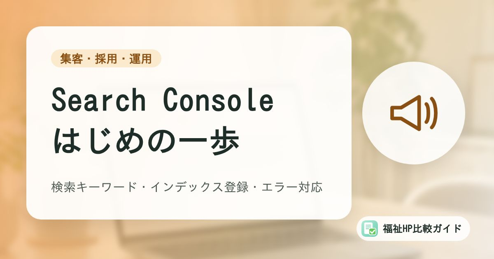

Google Search Consoleの基本｜福祉事業所が見たい検索キーワード・インデックス登録・エラー対応

ホームページを公開したあと、「どんな言葉で検索されているのか」「新しいページはGoogleに載っているのか」は、なかなか見えません。Googleが無料で提供しているSearch Consoleを使うと、これらを確認できます。この記事では、福祉事業所の担当者が最低限押さえておきたい使い方を、Googleの公式ヘルプにそって整理します。
この記事でわかること
- Search Consoleでわかることと、登録の流れ（プロパティの追加と所有権の確認）
- 検索パフォーマンス レポートで見たい4つの指標と、福祉事業所での読み方
- URL検査とページのインデックス登録レポートで、載っていないページを見つける方法
- 制作会社に任せている場合に確認したい権限の持ち方
Search Consoleでわかること
Google Search Console（以下、サーチコンソール）は、Google検索でのサイトの状況を確認・改善するための、Googleの無料サービスです。Googleのヘルプでは、主に次のことができると説明されています。
- Googleがサイトを見つけて、読み取れているか（クロールできているか）を確認する
- インデックス登録（Googleのデータベースへの登録）の問題を直し、新しいページや更新したページの登録をリクエストする
- サイトが検索結果に表示された回数や、表示されたときの検索語句、クリックされた回数を確認する
- インデックス登録やスパム、ハッキングなどの問題が見つかったときに通知を受け取る
登録しても順位は上がらない
サーチコンソールに登録しなくても、サイトはGoogle検索に表示されます。Googleのヘルプでも、プロパティを追加することがGoogle検索に影響することはないと説明されています。サーチコンソールは「順位を上げる道具」ではなく、「状況を知り、問題に気づくための道具」です。
Googleのヘルプでは、対象ユーザーとして「ビジネスオーナー」も挙げられています。自分で操作しない場合でも、何がわかる道具なのかを知っておくと、制作会社とのやりとりがスムーズになります。
登録の流れ：プロパティの追加と所有権の確認
サーチコンソールでは、確認・管理したいサイトを「プロパティ」として追加し、そのサイトの所有者であることを証明（所有権の確認）します。
プロパティの種類
| 種類 | 対象になる範囲 | 所有権の確認方法 |
|---|---|---|
| ドメイン プロパティ | example.com のすべて（www の有無、http/https、サブドメインを含む） | ドメイン名プロバイダ（DNSレコード）での確認のみ |
| URL プレフィックス プロパティ | 指定したURLで始まるページだけ（https:// と http:// は別扱い） | HTMLファイル、HTMLタグ、Googleアナリティクス、Googleタグ マネージャーなど |
ドメインの管理画面を操作できるなら、サイト全体をまとめて見られるドメイン プロパティが便利です。難しい場合は、URL プレフィックス プロパティで始めても構いません。
所有権の確認方法
Googleのヘルプでは、主な確認方法として次のものが紹介されています。
- HTMLファイルのアップロード：指定されたファイルをサーバーに置く
- HTMLタグ：トップページのHTMLに、指定されたタグを追加する
- Googleアナリティクス／Googleタグ マネージャー：すでにサイトに設定していれば、それを使って確認できる
- ドメイン名プロバイダ：ドメインの管理画面でDNSレコードを追加する
WordPress、Wix、Shopifyなどのサービスを使っている場合は、サービスごとにおすすめの方法があります。Googleアナリティクスを設定済みの事業所なら、その方法がいちばん手軽な場合が多いでしょう。データの収集はプロパティを追加した時点から始まりますが、レポートに表示されるまでには数日かかることがあると案内されています。
まず見たい「検索パフォーマンス」レポート
検索パフォーマンス レポートでは、Google検索の結果でのサイトの成績を確認できます。初期設定では過去3か月間のデータが表示されます。
4つの指標
| 指標 | 意味 | 福祉事業所での見方の例 |
|---|---|---|
| クリック数 | 検索結果からサイトがクリックされた回数 | 実際にホームページを見に来た人の数の目安 |
| 表示回数（インプレッション） | 検索結果にサイトが表示された回数 | 地域名＋サービス名などで、どれだけ目に触れているか |
| CTR（クリック率） | クリック数÷表示回数 | 表示はされているのに選ばれていないページの発見に |
| 平均掲載順位 | 検索結果での平均的な順位 | 大まかな傾向をつかむ目安（日々の上下に一喜一憂しない） |
「クエリ」と「ページ」を見る
表の切り替えで「クエリ」（検索語句）を選ぶと、どんな言葉で検索されたときにサイトが表示・クリックされたかがわかります。福祉事業所なら、例えば次のような点を確認してみましょう。
- 「◯◯市 グループホーム」「◯◯区 放課後等デイサービス」など、地域名＋サービス名で表示されているか
- 事業所名で検索されたときに、きちんとクリックされているか（されていなければ、検索結果に出るページのタイトルや説明文を見直すきっかけに）
- 「求人」「採用」など、職員募集に関する言葉で表示されているか
「ページ」を選ぶと、どのページが検索から見られているかがわかります。空き状況のページや採用ページなど、見てほしいページが検索から見られていない場合は、ページの内容やタイトルを見直す材料になります。
比較は「前の期間」と
季節や年度替わりで、検索される言葉や回数は変わります。期間の比較機能を使い、前の3か月や前年同月と比べると、傾向がつかみやすくなります。地域名での検索対策の考え方は「地域で見つけてもらうためのSEOの基本」も参考にしてください。
載っていないページを見つける：URL検査とインデックス登録
新しく作ったページが検索に出てこないときは、そもそもGoogleに登録（インデックス登録）されていない可能性があります。
URL検査ツール
調べたいページのURLを、サーチコンソール上部の検索窓に入力すると、そのページがGoogleに登録されているかどうかがわかります。
- 「URL は Google に登録されています」と出れば、検索結果に表示される条件を満たしている（必ず表示されるとは限らない）
- 登録されていない場合は、理由が表示される
- 新しいページや大きく更新したページは、「インデックス登録をリクエスト」でGoogleに知らせることができる
Googleのヘルプによると、登録は通常1日程度ですが、長くかかる場合もあり、リクエストしても登録されるとは限りません。リクエストできる数には1日あたりの上限があるため、多くのページをまとめて知らせたい場合は、サイトマップを送信する方法が案内されています。
ページのインデックス登録レポート
サイト全体で、登録されているページと登録されていないページの数、その理由を一覧で確認できます。よく見かける理由と、受け止め方の例は次のとおりです。
| 表示される理由 | 意味 | 対応の考え方 |
|---|---|---|
| 見つかりませんでした（404） | そのURLのページが存在しない | 削除したページなら問題ないことも多い。必要なページなら、リンク切れやURLの変更を確認 |
| クロール済み - インデックス未登録 | Googleが読み取ったが登録していない | Googleはすべてのページを登録するわけではなく、多くのサイトで見られる。重要なページなら内容の充実を検討 |
| 検出 - インデックス未登録 | URLは見つけたが、まだ読み取っていない | 時間をおいて様子を見る |
| ページにリダイレクトがあります | 別のURLに転送されている | URLを変更した場合などに表示される。意図どおりなら問題なし |
| ソフト 404 | ページはあるが中身がほとんどない、などと判断された | 空のページや「準備中」だけのページがないか確認 |
レポートに出ている項目が、すべて直すべきエラーとは限りません。Googleのヘルプでも、登録されていないことが必ずしもエラーによるものではないと説明されています。問い合わせ・空き状況・アクセスなど、見てほしいページが登録されているかを優先して確認しましょう。
サイトマップは必要？
サイトマップは、サイト内のページをGoogleに知らせるためのファイルです。Googleのヘルプでは、ページ数がおよそ500ページ以下で、トップページからリンクをたどってすべてのページに行ける小規模なサイトなら、サイトマップはおそらく必要ないとされています。WixやSquarespaceなどのサービスでは、サービス側でサイトマップが管理されていることも多いと案内されています。
制作会社に任せている場合に確認したいこと
ホームページの制作や保守を外部に任せていると、サーチコンソールの登録も制作会社のアカウントで行われていることがあります。
| 確認したいこと | 理由 |
|---|---|
| サーチコンソールに登録されているか | 未登録だと、インデックス登録の問題やハッキングの警告に気づけない |
| 事業所のGoogleアカウントにも権限があるか | 制作会社だけが所有者だと、契約終了後に見られなくなることがある |
| 通知メールが誰に届くか | 問題が見つかったときの通知が、担当者に届く設定になっているか |
| 月1回程度の報告をもらえるか | 自分で見る時間がない場合は、主な数字の報告を依頼する |
Googleのヘルプでは、確認済みの所有者がいなくなった場合は、改めて所有権の確認が必要になると説明されています。担当者の異動や制作会社の変更に備えて、事業所側のアカウントも所有者またはユーザーとして登録しておくと安心です。
ハッキングなどの問題が通知されたときの対応は「ホームページが改ざん・乗っ取りされたときの初動対応マニュアル」で、Googleマップでの見え方は「Googleビジネスプロフィールの基本」で解説しています。
まとめ
サーチコンソールは、Google検索から見た自分たちのホームページの「健康診断」のような道具です。登録しただけで順位が上がるわけではありませんが、どんな言葉で見つけてもらえているか、見てほしいページがGoogleに登録されているかを確かめられます。
最初は、月に1回、検索パフォーマンスの「クエリ」と「ページ」を見て、ページのインデックス登録レポートで大事なページが漏れていないかを確認するだけでも十分です。制作会社に任せている場合も、事業所側のアカウントで見られる状態にしておきましょう。
よくある質問
Search Consoleに登録すると、検索順位が上がりますか？
上がりません。Googleのヘルプでも、Search Consoleに登録しなくてもGoogle検索結果に表示されるとされ、プロパティの追加がGoogle検索に影響することはないと説明されています。Search Consoleは、状況を確認し、問題に気づいて直すための道具です。
Googleアナリティクスとは何が違いますか？
Search Consoleは、Google検索の結果でサイトがどう表示され、どの言葉でクリックされたかなど、主に「サイトに来る前」の情報がわかります。Googleアナリティクスは、サイトに来たあとにどのページが見られ、問い合わせにつながったかなど、「サイトに来たあと」の行動を見る道具です。両方を組み合わせると全体像がつかみやすくなります。
WixやJimdoなどのサービスで作ったサイトでも使えますか？
使えます。所有権の確認方法はサービスによって異なり、Googleのヘルプでもホスティング サービスごとの方法を確認するよう案内されています。サイトマップも、こうしたサービスでは自動で管理されていることが多く、自分で作る必要がない場合があります。
参考資料・出典
- Search Console ヘルプ「Search Console の概要」
- Search Console ヘルプ「ウェブサイトまたはプラットフォームのプロパティを Search Console に追加する」
- Search Console ヘルプ「サイトの所有権を確認する」
- Search Console ヘルプ「検索パフォーマンス レポート（検索結果）: 概要と基本設定」
- Search Console ヘルプ「URL 検査ツール」
- Search Console ヘルプ「ページのインデックス登録レポート」
- Search Console ヘルプ「サイトマップ レポートを使用してサイトマップを管理する」
制度・料金・統計は改定される場合があります。最新の内容は各出典の公式情報でご確認ください。